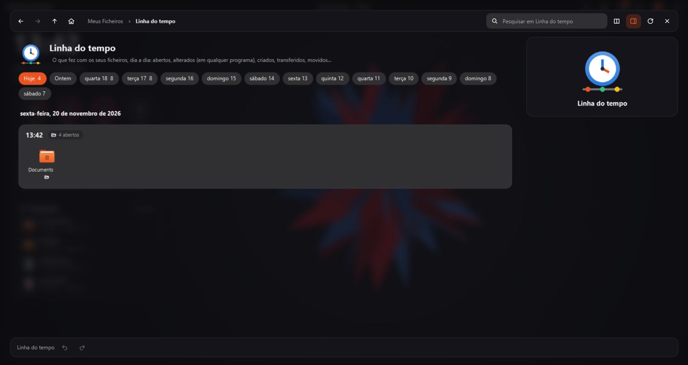
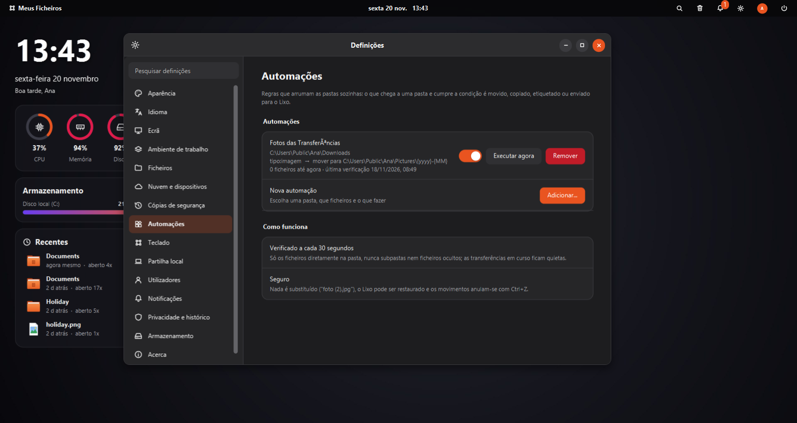

Etiquetas, linha do tempo e automações
Etiquetas#
As etiquetas são marcadores coloridos que coloca em ficheiros e pastas, por exemplo Trabalho, Urgente ou Pessoal.
- Clique com o botão direito › Etiquetas mostra as etiquetas existentes e Nova etiqueta.... Pode etiquetar vários itens de uma vez.
- Os itens etiquetados mostram pontos coloridos nos ícones, e as etiquetas aparecem no painel de detalhes.
- Cada etiqueta é um local em Meus Ficheiros que lista tudo o que tem essa etiqueta.
etiqueta:Trabalhofunciona na pesquisa e nas coleções inteligentes (tag:Trabalhotambém).
As etiquetas são guardadas pelo FileExp, por isso funcionam em qualquer sistema de ficheiros e em qualquer unidade. Acompanham os ficheiros quando o FileExp lhes muda o nome ou os move, incluindo as movimentações feitas por Anular, pela vista dividida e pelas automações.
Linha do tempo#
A Linha do tempo (Meus Ficheiros › Pastas › Linha do tempo) é um diário do seu trabalho com ficheiros, dia a dia.

Regista quando os ficheiros foram abertos, alterados em qualquer programa, criados, renomeados, movidos, copiados, transferidos, enviados para a nuvem, copiados para segurança, tratados por automações, recebidos de um computador próximo e colocados no cofre.
- Os eventos são agrupados em sessões de trabalho: uma pausa de mais de 45 minutos inicia uma nova sessão. Cada sessão mostra um resumo por tipo e os seus ficheiros.
- Clique para mostrar o ficheiro na sua pasta; faça duplo clique para o abrir. Os ficheiros que já não existem aparecem esbatidos.
- São guardados os últimos 5 000 eventos.
- Definições › Privacidade e histórico desliga o histórico de atividade e limpa-o.
Os ficheiros alterados por outros programas (por exemplo um documento guardado no seu processador de texto) vêm do índice da pasta pessoal, por isso aparecem mesmo quando o FileExp não foi usado para os abrir.
Automações#
As automações são regras que arrumam pastas por si. Abra Definições › Automações.

Uma regra tem:
| Parte | Exemplo |
|---|---|
| Pasta a vigiar | Transferências |
| Condição | Quaisquer palavras de pesquisa: tipo:imagem, *.pdf, tamanho>100mb… |
| Idade mínima (opcional) | Só ficheiros com mais de 30 dias |
| Ação | Mover para, Copiar para, Mover para o lixo ou Pôr uma etiqueta |
| Destino | Pictures/{yyyy}-{MM} — as partes da data são substituídas pela data do ficheiro ({dd}, {type} e {ext} também funcionam) |
Exemplos prontos: fotos e documentos das Transferências, instaladores antigos para o Lixo, organizar as Transferências por tipo.
Como funcionam#
- A cada 30 segundos, apenas nos ficheiros que estão diretamente na pasta — nunca em subpastas nem em ficheiros ocultos.
- As transferências em curso são ignoradas (
.part,.crdownloade ficheiros alterados há poucos segundos). - Nada é substituído: um nome que já existe passa a "foto (2).jpg".
- As movimentações podem ser anuladas com Ctrl+Z, e a notificação tem um botão Anular.
- Tudo o que uma automação faz aparece na linha do tempo.
Partilhar coleções e regras (desde a 3.11)#
Uma coleção inteligente ou uma regra de automação pode ir para outro computador, ou para outra pessoa, num ficheiro pequeno com o ícone do FileExp:
| Ficheiro | Contém | Para exportar |
|---|---|---|
.fexc | Uma coleção inteligente (a pesquisa e a pasta onde procura) | Em Meus Ficheiros, botão direito no mosaico da coleção (ou no fundo, dentro dela) › Exportar coleção... |
.fexr | Uma regra de automação (pasta, condição, ação, destino, idade mínima) | Definições › Automações › Exportar... na linha da regra |
- Escolha a pasta; o FileExp grava
<nome>.fexcou<nome>.fexre nunca substitui um ficheiro que já existe. - Abrir o ficheiro (duplo clique no sistema, ou em Meus Ficheiros) mostra o que contém antes de o acrescentar: o nome, a versão do FileExp que o fez e a data, a pesquisa ou a regra e as pastas. Uma pasta que não existe neste computador aparece a vermelho, "Não existe neste computador"; é acrescentada na mesma e funciona quando a pasta existir.
- Os caminhos dentro da pasta pessoal acompanham o utilizador (
C:\Users\Ana\Videospassa aC:\Users\Rui\Videos). Um nome que já existe ganha outro ("Vídeos grandes (2)"). - Uma regra chega desligada quando manda ficheiros para o Lixo, quando falta uma das suas pastas ou quando vinha desligada; a caixa Ativar a regra já decide.
- A notificação tem Anular, que remove exatamente o que foi acrescentado.
- Um ficheiro que não é do FileExp, do tipo errado ou feito por um FileExp mais recente é recusado com uma mensagem clara.